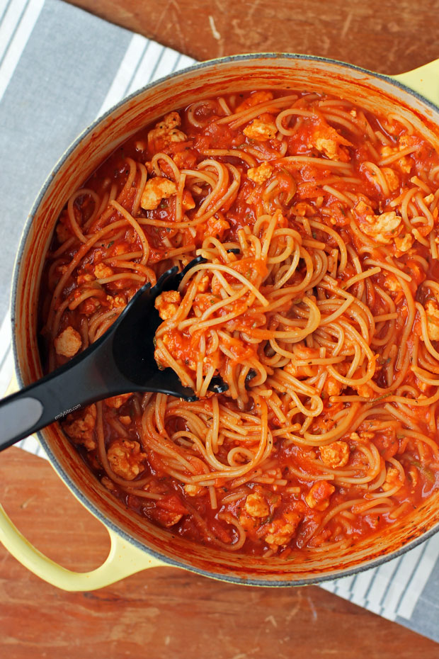

Spaghetti is one of those dishes that is so easy anyone can do it.
It is one of the most versatile dishes that can be done with ease on the cheap.
Ingredients
- spaghetti noodles
- spicy italian sausage
- glass jar of marinara sauce
- parmesan cheese
Recipe Steps
- Bring a pot of water to a boil and salt the water.
- Once the water is starting to simmer, begin warming up a pan to cook the meat.
- Once the water is boiling, place the noodles into the water and salt lightly again.
At the same time begin cookling the italian sausage until brown; cook the
noodles for 10-12 minutes.
- Once the meat is browned, add the sauce and get it to a simmer. Combine once
the noodles are done and strained and enjoy! Add parmesan for extra sauce.